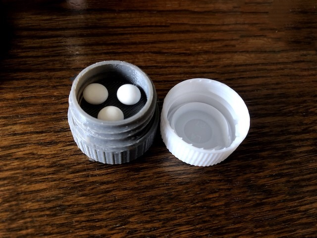
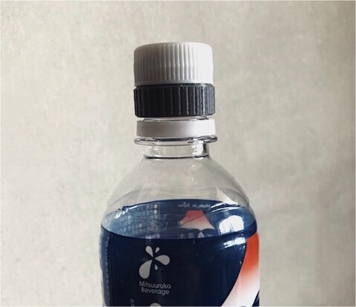

Medicine case 



概要 Summary
ペットボトルに直接つけることができる薬ケースです。
印刷がうまくいかない場合は、3枚目の写真の向きで印刷を行ってください。
A medicine case that can be attached directly to a PET bottle.
If you are having trouble printing, try printing in the orientation of the third photo.